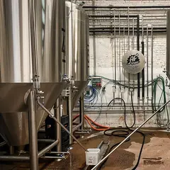

Места по типу · данные на 19 октября
Бани и спа в Петербурге
18 мест: исторические бани, хамамы, термальные комплексы и спа — например, «Камыши», «Лахтинские бани» и «Фонарные бани». Компанией или вдвоём — после пара в планах ниже есть где поужинать.
- 18 мест
- 20 планов
- 6 районов
Бани, хамамы и спа 18
Хуторская ул., 5, д. Энколово
Новое
Банный курорт сразу за северной границей города: дровяная парная-ротонда, хаммам, горячие чаши и выход к реке — на целый день.
Лахтинский пр., 33
Новое
Отдельные бревенчатые бани у Финского залива — удобно вдвоём или компанией: дровяная парная, открытый бассейн и японская бочка-фурако.
Подробнее и маршрут: Лахтинские баниПозвать сюда: Лахтинские бани
Фонарный пер., 1
Новое
Бани XIX века у Мойки после бережной реставрации: мраморные залы, исторический бассейн, парение и массаж — почти музей с паром.
Подробнее и маршрут: Фонарные баниПозвать сюда: Фонарные бани
Ярославский пр., 16
Новое
Добротная баня недалеко от Удельной: общие отделения с русской парной, хаммамом и бассейном, а для особого случая — премиум-залы.
Подробнее и маршрут: Бани на ЯрославскомПозвать сюда: Бани на Ярославском
Средний пр. В.О., 22
Новое
Старая баня у метро Василеостровская: русская парная, хаммам, бассейн и купель — без пафоса и за разумные деньги.
Подробнее и маршрут: Василеостровские баниПозвать сюда: Василеостровские бани
ул. Шаврова, 26
Новое
Баня только для женщин: сауна, хаммам, уходовые средства и чай уже входят в почасовую цену — отличный вариант для девичника.
Дегтярная ул., 1А
Новое
Послевоенная баня, ставшая большим современным комплексом: несколько классов, хаммам, купели и ресторан, чтобы поужинать после пара.
Подробнее и маршрут: Дегтярные баниПозвать сюда: Дегтярные бани
Большой Казачий пер., 11
КруглосуточноНовое
Простая районная баня у Сенной без лишнего лоска: крепкая парная в общем классе и люксы с бассейном для компании.
ул. Карбышева, 29А
Новое
Конструктивистская «шайба» у Площади Мужества: густой влажный пар, хаммам и знаменитый бассейн под открытым небом.
Мытнинская ул., 17-19Б
Новое
Старинная общественная баня на Песках, где держатся традиции дровяного пара; по утрам общие классы стоят совсем недорого.
Подробнее и маршрут: Мытнинские баниПозвать сюда: Мытнинские бани
ул. Матроса Железняка, 57
КруглосуточноНовое
Парная под самой крышей высотки: из купели видно Удельный парк и залив, а для двоих есть отдельный пентхаус с баней.
Пискарёвский пр., 125Л
КруглосуточноНовое
Банный комплекс, который снимают целиком на большую компанию: дровяная русская парная, хаммам, бассейн, джакузи и купель.
Мебельная ул., 33
Новое
Новый многоэтажный банный комплекс у Старой Деревни: парная и тёплый бассейн на крыше, а в окне — Лахта-центр.
Подробнее и маршрут: Приморские баниПозвать сюда: Приморские бани
пер. Макаренко, 12
Новое
Баня 1930-х в Коломне с классами на любой бюджет — от народного до купеческого, с тёплым бассейном и рестораном при комплексе.
Подробнее и маршрут: Усачёвские баниПозвать сюда: Усачёвские бани
ул. Достоевского, 9
Новое
Баня с полуторавековой историей после бережного ремонта: ровный русский пар и общие классы по честной цене рядом с Владимирской.
Лермонтовский пр., 43/1
Новое
Небольшая баня-спа у Балтийской, куда идут за ритуалом: авторские парения, хаммам, купели и даже сеновал для отдыха.
наб. Обводного канала, 146
Новое
Камерный банный клуб у Обводного с отдельными парными: парение с мастером, массаж и чай после — дорогой подарок на особый вечер.
Воронежская ул., 6-8
КруглосуточноНовое
Довоенная ленинградская баня в районе Лиговки: недорогой общий зал по-старому, а для компании — люксы с бассейном и хаммамом.
Подробнее и маршрут: Баня «Водолей»Позвать сюда: Баня «Водолей»
Готовые планы с этими местами 12 из 20

- Siberia · Приватная баня · м. Нарвская
- 7 минут пешкомAF Brew Taproom · Крафтовый бар
Камерный банный клуб у Обводного: отдельная парная и парение с мастером, а потом 7 минут пешком — флагманский тапрум AF Brew.
Открыть план: Парение с мастером и тапрум AF BrewПозвать сюда: Парение с мастером и тапрум AF Brew
Фото: НАндреев, CC BY-SA 4.0 · Wikimedia Commons
- Brooms · Баня-спа · м. Балтийская
- 1 минута пешкомF11 · Бар на крыше
Авторские парения, хаммам и купели в небольшой бане-спа, а потом через дорогу — бар на 18-м этаже с видом на Исаакий.
Открыть план: Банный ритуал и коктейли на крышеПозвать сюда: Банный ритуал и коктейли на крыше
- Василеостровские бани · Баня · м. Василеостровская
- 5 минут пешкомТолстый фраер на Васильевском · Пивной ресторан
Старая баня у метро: русская парная, хаммам и купель без пафоса, а потом 5 минут пешком — пивной ресторан в советском антураже.
Открыть план: Баня на Васильевском и пиво послеПозвать сюда: Баня на Васильевском и пиво после
- Дегтярные бани · Банный комплекс · м. Площадь Восстания
- 1 минута пешкомБанщики · Ресторан
Несколько классов, хаммам и купели в большом банном комплексе, а ужин — в соседнем ресторане «Банщики»: пироги, заготовки и шашлык.
Открыть план: Дегтярные бани и ужин в «Банщиках»Позвать сюда: Дегтярные бани и ужин в «Банщиках»
- Мытнинские бани · Баня на дровах · м. Площадь Восстания
- 13 минут пешкомХоровод · Крафтовый бар
Старинная баня на Песках, где держатся традиции дровяного пара, а потом 13 минут пешком — бар пивоварни AF Brew со свежими сортами и запечённым костным мозгом.
Открыть план: Дровяной пар и крафт на НекрасоваПозвать сюда: Дровяной пар и крафт на Некрасова
- Казачьи бани · Баня · м. Пушкинская
- 9 минут пешкомДиккенс · Паб
Крепкая парная в общем классе или люкс с бассейном для компании, а потом 9 минут пешком — английский паб с футболом.
Открыть план: Казачьи бани и паб на ФонтанкеПозвать сюда: Казачьи бани и паб на Фонтанке
- Фонарные бани · Баня · м. Садовая
- 2 минуты пешкомЕМ · Ресторан
Отреставрированные мраморные залы и исторический бассейн бань XIX века, а потом пара минут по Мойке — ужин из многих перемен в «ЕМ».
Открыть план: Мраморные бани и ужин-сетПозвать сюда: Мраморные бани и ужин-сет
- Усачёвские бани · Баня · м. Технологический институт
- 8 минут пешкомF11 · Бар на крыше
Баня 1930-х в Коломне с тёплым бассейном, а потом 8 минут пешком — бар на 18-м этаже отеля с видом на Исаакий и крыши центра.
Открыть план: Усачёвские бани и бар на 18-м этажеПозвать сюда: Усачёвские бани и бар на 18-м этаже
- Фонарные бани · Баня · м. Садовая
- 11 минут пешкомBrewmen Taproom · Крафтовый бар
Мраморные залы и исторический бассейн бань XIX века, а потом 11 минут пешком по Мойке — тапрум питерской пивоварни Brewmen.
Открыть план: Фонарные бани и тапрум на МойкеПозвать сюда: Фонарные бани и тапрум на Мойке
- Ямские бани · Баня · м. Владимирская
- 6 минут пешкомRing o'Bells · Паб
Ровный русский пар в бане с полуторавековой историей, а потом 6 минут пешком — паб с элем на кранах, который работает до пяти утра.
Открыть план: Ямские бани и британский пабПозвать сюда: Ямские бани и британский паб
- Бани на Ярославском · Баня · м. Удельная
Добротная баня у Удельной: общие отделения с русской парной, хаммамом и бассейном — без понтов, зато с хорошим паром.
Открыть план: Бани на ЯрославскомПозвать сюда: Бани на Ярославском
- Камыши · Загородный банный комплекс · м. Девяткино
Сразу за северной границей города: дровяная парная-ротонда, хаммам, горячие чаши и выход к реке — на полдня.
Открыть план: Банный курорт за городомПозвать сюда: Банный курорт за городом
Как позвать
- Выбери план, место или событие — в карточке адрес, цены и маршрут в Яндекс Картах.
- Нажми «Позвать сюда» — соберётся приглашение-игра для свидания или голосование для компании.
- Отправь ссылку в любой мессенджер: тебе ответят, а компания отметит, куда и когда может. Бесплатно и без регистрации.